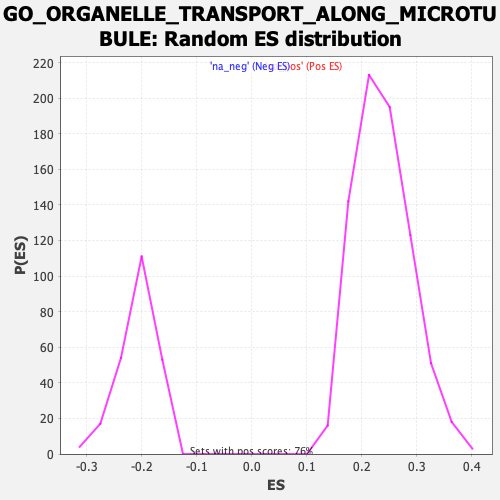

| | | Dataset | CK_basal |
| Phenotype | NoPhenotypeAvailable |
| Upregulated in class | na_neg |
| GeneSet | GO_ORGANELLE_TRANSPORT_ALONG_MICROTUBULE |
| Enrichment Score (ES) | -0.46869454 |
| Normalized Enrichment Score (NES) | -2.2520442 |
| Nominal p-value | 0.0 |
| FDR q-value | 0.016890738 |
| FWER p-Value | 0.076 |
Table: GSEA Results Summary
 Fig 1: Enrichment plot: GO_ORGANELLE_TRANSPORT_ALONG_MICROTUBULE
Fig 1: Enrichment plot: GO_ORGANELLE_TRANSPORT_ALONG_MICROTUBULE
Profile of the Running ES Score & Positions of GeneSet Members on the Rank Ordered List
| SYMBOL | RANK IN GENE LIST | RANK METRIC SCORE | RUNNING ES | CORE ENRICHMENT | | 1 | BLOC1S3 | 752 | 2.113 | -0.0142 | No |
| 2 | AP3B2 | 1618 | 1.744 | -0.0384 | No |
| 3 | KIF23 | 1681 | 1.725 | -0.0216 | No |
| 4 | WASF1 | 2025 | 1.620 | -0.0204 | No |
| 5 | SPAST | 2546 | 1.472 | -0.0301 | No |
| 6 | KIF3C | 2551 | 1.470 | -0.0132 | No |
| 7 | CLN3 | 2900 | 1.392 | -0.0149 | No |
| 8 | TRIM46 | 3315 | 1.299 | -0.0212 | No |
| 9 | SYNE2 | 3483 | 1.263 | -0.0151 | No |
| 10 | PRKCZ | 3781 | 1.194 | -0.0165 | No |
| 11 | STK11 | 3977 | 1.157 | -0.0131 | No |
| 12 | NEFH | 4638 | 1.037 | -0.0350 | No |
| 13 | KIF13A | 6143 | 0.785 | -0.1033 | No |
| 14 | MAP1S | 6315 | 0.755 | -0.1033 | No |
| 15 | LRPPRC | 6449 | 0.735 | -0.1016 | No |
| 16 | COPG2 | 6474 | 0.732 | -0.0944 | No |
| 17 | TMEM201 | 6694 | 0.697 | -0.0975 | No |
| 18 | KIF1A | 7629 | 0.549 | -0.1392 | No |
| 19 | COPG1 | 7638 | 0.548 | -0.1333 | No |
| 20 | BLOC1S4 | 8031 | 0.488 | -0.1477 | No |
| 21 | NDE1 | 8444 | 0.423 | -0.1640 | No |
| 22 | FBXW11 | 8890 | 0.356 | -0.1828 | No |
| 23 | BICD2 | 9476 | 0.261 | -0.2098 | No |
| 24 | SNAPIN | 9498 | 0.256 | -0.2079 | No |
| 25 | KIF1B | 9502 | 0.255 | -0.2051 | No |
| 26 | KIF1C | 9535 | 0.250 | -0.2039 | No |
| 27 | NEFL | 9760 | 0.219 | -0.2129 | No |
| 28 | KIF5B | 9794 | 0.214 | -0.2121 | No |
| 29 | VAMP7 | 9950 | 0.190 | -0.2178 | No |
| 30 | FEZ1 | 10061 | 0.173 | -0.2215 | No |
| 31 | RAB1A | 10100 | 0.167 | -0.2215 | No |
| 32 | AP3S2 | 10628 | 0.083 | -0.2476 | No |
| 33 | CNIH2 | 10763 | 0.062 | -0.2538 | No |
| 34 | BORCS5 | 10768 | 0.062 | -0.2533 | No |
| 35 | DTNBP1 | 10915 | 0.035 | -0.2604 | No |
| 36 | DYNC1I1 | 11454 | -0.048 | -0.2875 | No |
| 37 | AGBL4 | 11474 | -0.051 | -0.2879 | No |
| 38 | BLOC1S6 | 12288 | -0.183 | -0.3276 | No |
| 39 | CDC42 | 12462 | -0.216 | -0.3340 | No |
| 40 | BLOC1S5 | 12561 | -0.232 | -0.3363 | No |
| 41 | MAPT | 13071 | -0.318 | -0.3588 | No |
| 42 | AP3S1 | 14102 | -0.496 | -0.4060 | No |
| 43 | AP3M1 | 15235 | -0.722 | -0.4559 | No |
| 44 | RASGRP1 | 15260 | -0.727 | -0.4487 | No |
| 45 | NDEL1 | 15300 | -0.736 | -0.4421 | No |
| 46 | BLOC1S1 | 15368 | -0.751 | -0.4369 | No |
| 47 | KIFAP3 | 15988 | -0.881 | -0.4585 | Yes |
| 48 | BICD1 | 16080 | -0.901 | -0.4527 | Yes |
| 49 | KIF3B | 16172 | -0.919 | -0.4467 | Yes |
| 50 | PAFAH1B1 | 16173 | -0.919 | -0.4360 | Yes |
| 51 | TRIM58 | 16291 | -0.944 | -0.4311 | Yes |
| 52 | TRAK2 | 16575 | -1.012 | -0.4339 | Yes |
| 53 | HAP1 | 16926 | -1.101 | -0.4391 | Yes |
| 54 | DYNC1H1 | 17074 | -1.131 | -0.4336 | Yes |
| 55 | SUN1 | 17218 | -1.175 | -0.4273 | Yes |
| 56 | RHOT2 | 17494 | -1.256 | -0.4268 | Yes |
| 57 | UXT | 17576 | -1.286 | -0.4161 | Yes |
| 58 | MAP1B | 17579 | -1.287 | -0.4012 | Yes |
| 59 | MGARP | 17666 | -1.315 | -0.3904 | Yes |
| 60 | RAB6A | 17713 | -1.327 | -0.3774 | Yes |
| 61 | OPA1 | 17797 | -1.354 | -0.3659 | Yes |
| 62 | UCHL1 | 17824 | -1.365 | -0.3514 | Yes |
| 63 | MAP2 | 17934 | -1.402 | -0.3407 | Yes |
| 64 | KIF5A | 18331 | -1.573 | -0.3428 | Yes |
| 65 | AP3B1 | 18439 | -1.613 | -0.3296 | Yes |
| 66 | AP3M2 | 18491 | -1.641 | -0.3132 | Yes |
| 67 | HIF1A | 18507 | -1.647 | -0.2949 | Yes |
| 68 | SUN2 | 18541 | -1.668 | -0.2772 | Yes |
| 69 | LAMP1 | 18678 | -1.740 | -0.2640 | Yes |
| 70 | HTT | 18750 | -1.784 | -0.2469 | Yes |
| 71 | RHOT1 | 18762 | -1.788 | -0.2267 | Yes |
| 72 | PEX14 | 18771 | -1.794 | -0.2063 | Yes |
| 73 | ARHGAP21 | 18775 | -1.796 | -0.1856 | Yes |
| 74 | FYCO1 | 18935 | -1.901 | -0.1718 | Yes |
| 75 | ACTR10 | 18956 | -1.921 | -0.1505 | Yes |
| 76 | KIF3A | 18975 | -1.931 | -0.1290 | Yes |
| 77 | MREG | 19119 | -2.063 | -0.1124 | Yes |
| 78 | BLOC1S2 | 19239 | -2.194 | -0.0931 | Yes |
| 79 | UBB | 19241 | -2.194 | -0.0676 | Yes |
| 80 | AP3D1 | 19253 | -2.216 | -0.0425 | Yes |
| 81 | SYBU | 19288 | -2.273 | -0.0179 | Yes |
| 82 | TRAK1 | 19425 | -2.581 | 0.0051 | Yes |
Table: GSEA details [plain text format]

Fig 2: GO_ORGANELLE_TRANSPORT_ALONG_MICROTUBULE: Random ES distribution
Gene set null distribution of ES for GO_ORGANELLE_TRANSPORT_ALONG_MICROTUBULE